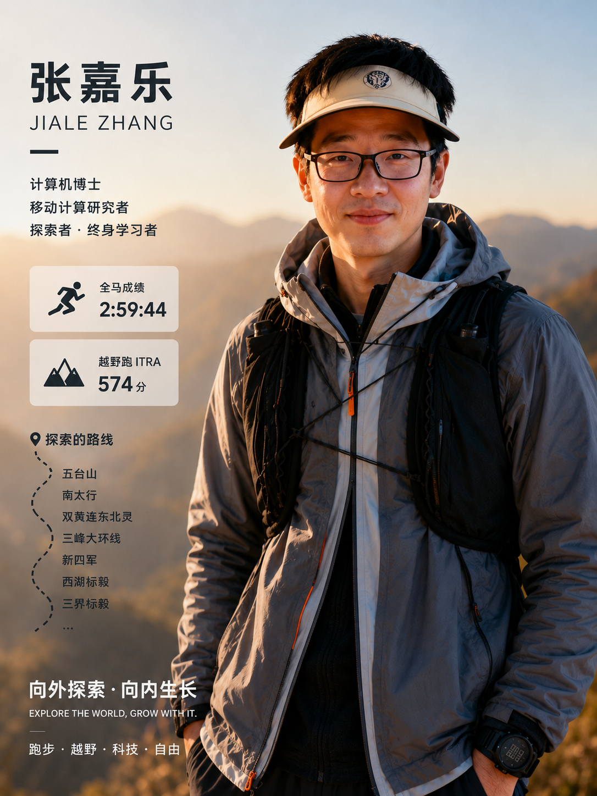
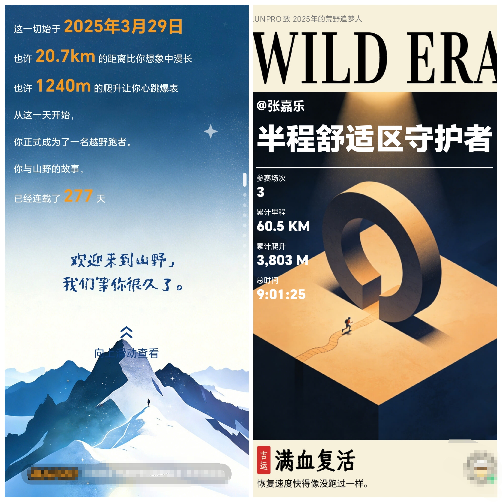

马拉松 · MARATHON
Sub 3 hours
10 月，首次参加全程马拉松，跑进三小时。
LIFE BEYOND THE DESK
Explore the world. Grow with it.
我是张嘉乐。做研究之外，我喜欢跑步、徒步、骑行，也喜欢沿着一条陌生的路，慢慢认识一座城、一片山。
从城市街角到山野长线，把好奇心交给脚步，把时间留给真实的体验。
跑步 · 徒步 · 越野 · 骑行 · 旅行
翻开我的 2025 户外记录
A YEAR IN MOTION
一千余小时的运动与出行，留给山野、街道和自己。以下来自我的 2025 年度运动与旅行记录。
数据口径：个人 2025 年度报告，综合运动与出行平台记录；不同项目可能交叉，不直接相加。
马拉松 · MARATHON
10 月，首次参加全程马拉松，跑进三小时。
半程马拉松 · HALF MARATHON
3 月首次站上半马赛道，全年参加三场，个人最佳约 1 小时 23 分。
越野跑 · TRAIL RUNNING
全年三场 20 公里级别越野赛，累计 60.5 公里、爬升 3,803 米。
五台山、南太行、双黄连东北灵、三峰大环线……有长线的耐心，也有一次次重新出发。徒步足迹，从北京周边延伸到更多省份与城市。
2025 年走过 53 个国内城市、15 个海外城市。旅行之外，也喜欢探索日常生活里的街角：在北京点亮 200 个城市角落，慢慢建立自己的城市地图。


85 次徒步的路线、距离与爬升记录。表格较宽，打开原图后可以放大查看。
查看徒步路线总表原图世界之大，勇敢出发。
路在何方，路在脚下。Keep exploring, one step at a time.